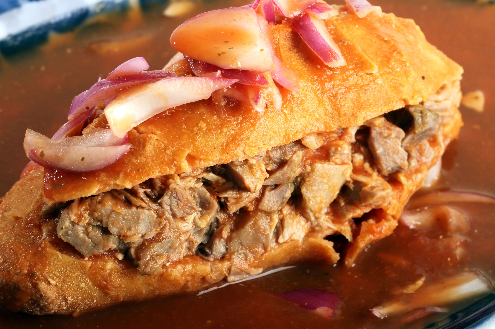
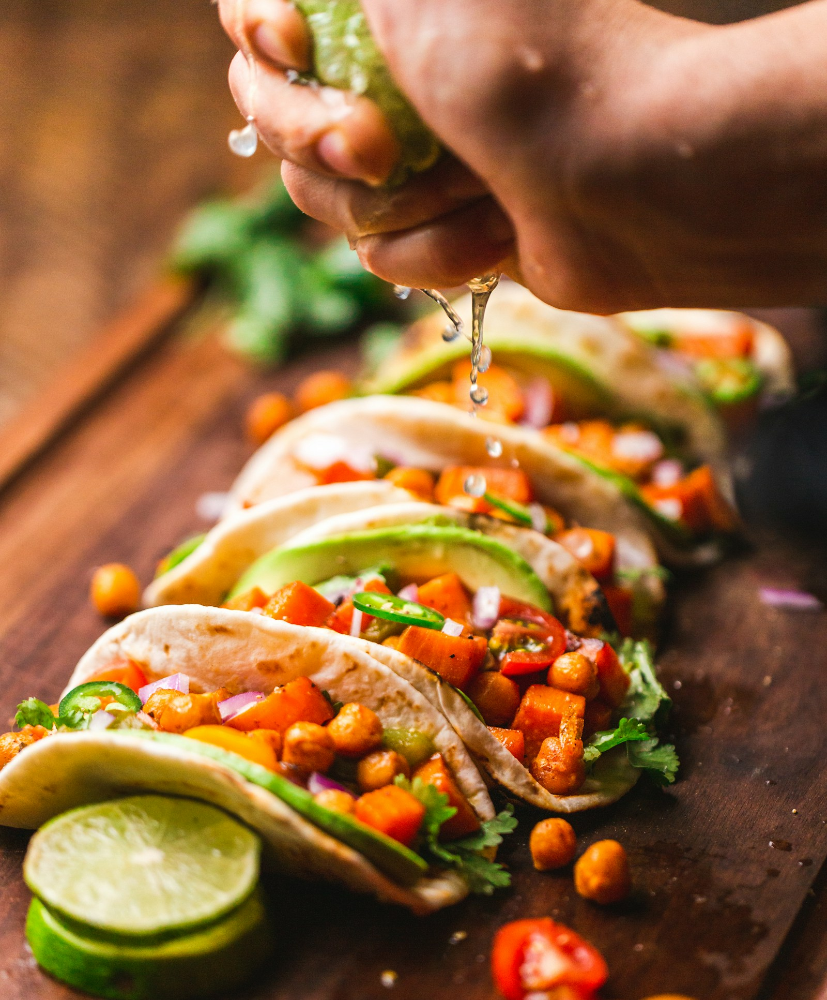
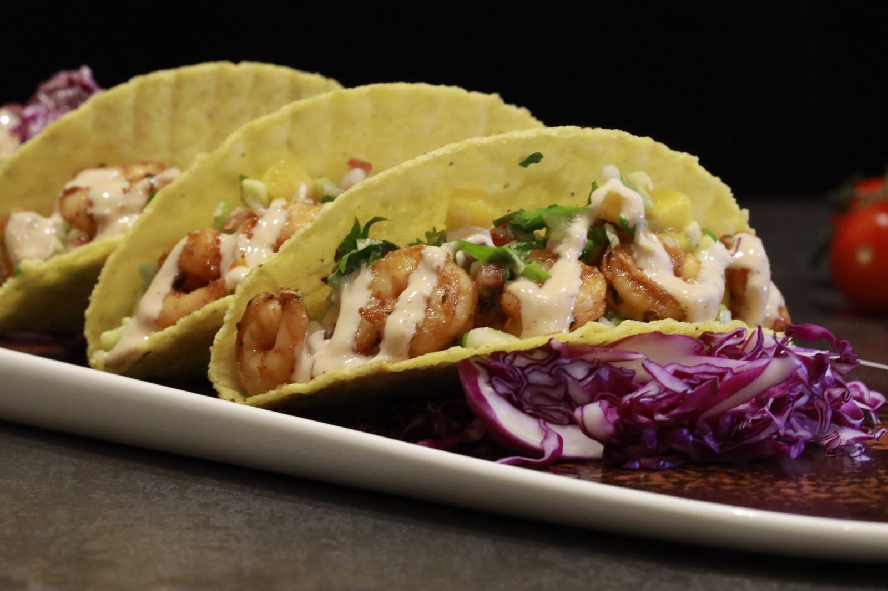
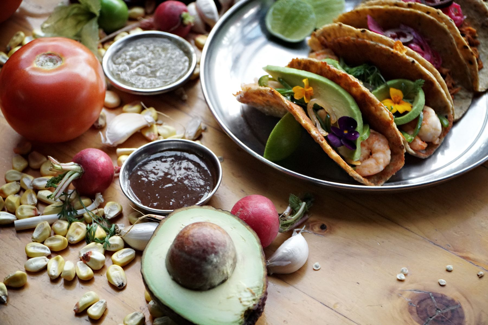
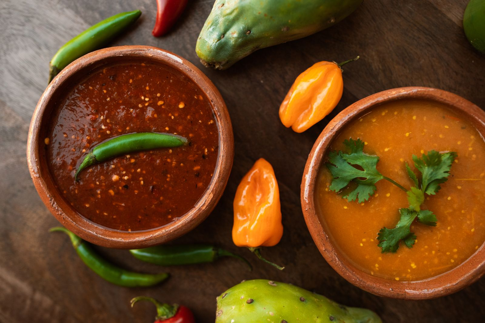
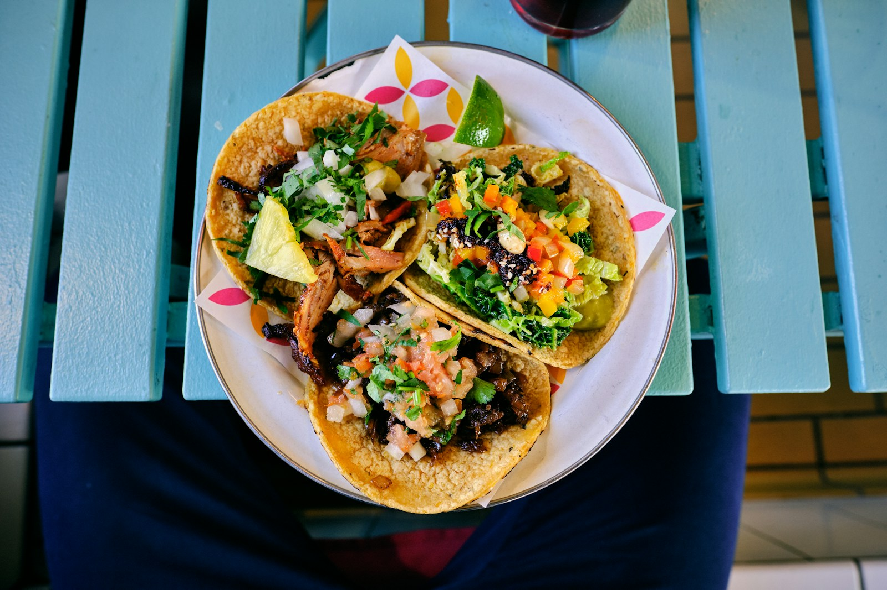

Fuego y Mar - cocina mexicana con alma costera
El antojo se ahoga
en sabor.
Especialistas en |
Tortas ahogadas, tacos de pescado, camarón y más: una propuesta gastronómica que une tradición, frescura y una presentación contemporánea para convertir cada mordida en una experiencia memorable.
para empezar
Sobre Fuego y Mar
Tradición mexicana con chispa contemporánea.
Fuego y Mar nace como un nuevo emprendimiento gastronómico enfocado en tortas ahogadas y tacos de pescado y camarón. Su propuesta combina el carácter intenso de las salsas con la frescura del mar, cuidando ingredientes, sabor y presentación.
Fuego
Salsas con personalidad, picor equilibrado y ese golpe de sabor que hace que una torta ahogada se recuerde.
Mar
Pescado y camarón al centro del antojo, preparados para destacar textura, frescura y contraste.
Cocina auténtica
Sabores reconocibles de México con un enfoque actual, directo y listo para conquistar a amantes del buen antojo.
Menú base
Lo tradicional, lo fresco y lo picosito en una misma mesa.
La información disponible del negocio confirma tortas ahogadas, tacos de pescado, tacos de camarón y otros productos gastronómicos alineados a una experiencia mexicana auténtica.

Tortas ahogadas
El corazón del concepto: pan, salsa y una intensidad que abraza la tradición sin sentirse común.
- Salsa protagonista con carácter, color y profundidad.
- Preparación pensada para una experiencia abundante y memorable.
- Contraste de texturas para mantener cada bocado vivo.
- Ideal para quienes buscan una comida mexicana auténtica y contundente.

Tacos de pescado
Una opción fresca, ligera y llena de sabor para quienes aman la cocina mexicana con toque costero.
- Pescado como ingrediente principal, servido con guarniciones frescas.
- Perfil de sabor balanceado: cítrico, crujiente y sabroso.
- Presentación casual contemporánea sin perder esencia callejera.
- Perfectos para comer al momento y compartir.

Tacos de camarón y más
El lado más fresco y antojable del menú, con productos gastronómicos que amplían la propuesta de Fuego y Mar.
- Camarón como protagonista en formato práctico y lleno de sabor.
- Ingredientes frescos y de alta calidad como diferenciador central.
- Combinaciones pensadas para amantes de la comida mexicana y pescados.
- Opciones adicionales sujetas al menú final del emprendimiento.
¿Quieres conocer disponibilidad, menú final o pedidos especiales?
Solicitar información¿Por qué Fuego y Mar?
Una marca nueva con una idea clara: antojos bien hechos.
Sabor con identidad
Una mezcla reconocible entre el fuego de las salsas y la frescura del mar.
Ingredientes cuidados
La frescura y la calidad son parte central de la propuesta gastronómica.
Antojo auténtico
Tortas y tacos diseñados para satisfacer hambre real con sabor mexicano.
Experiencia memorable
Un enfoque contemporáneo que busca que la comida se vea tan bien como sabe.
Galería
Texturas, salsas y frescura a primera vista.
Una dirección visual pensada para reflejar el carácter de Fuego y Mar: colores vivos, comida real y una sensación inmediata de antojo.



Contacto
Pregunta por disponibilidad y menú.
Fuego y Mar está construyendo una propuesta culinaria enfocada en tortas ahogadas, tacos de pescado, camarón y más. La marca puede activar aquí sus canales oficiales de pedidos cuando queden definidos.
- Tortas ahogadas con salsa protagonista
- Tacos de pescado y tacos de camarón
- Productos gastronómicos con ingredientes frescos y de alta calidad